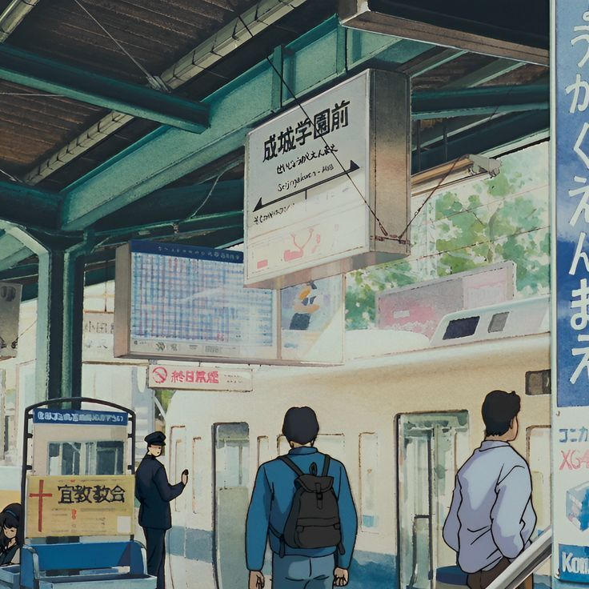

asian identity
This was our first speedfriending events with a theme, thanks to suggestions by our members. The theme of each speedfriending is supposed to act as a topic that members can come to the event prepared for to ease into the flow of speedfriending. If they want to talk about other stuff, that’s perfectly fine.
This time around we asked a few of the attendees to submit their answers to us and we’ve included those responses below!
“What does being Asian mean to you?”
★ “Do you feel closer to ‘Asian-American’ or ‘X-American’ (Chinese, Indian, etc.)?” ★ “What parts of your life feel closest to your ethnicity’s culture?” “Have you visited your ‘native’ country? Would you live there? Do you fit in?” “Is it hard to answer ‘What does being Asian mean to you’? Why?”
“What activities make you feel Asian?”
“Is it the food you eat, the music you listen to, the clothes you wear, etc. that make you Asian?” ★ “How many other Asian people do you see at school, work, or within your friend group? Would you wish to connect with other Asians more often?” “Do you speak your ‘native’ language? If not, do you want to learn?”
“What pressures do you feel being Asian?”
“Which pressures had positive impacts on you? Negative?” ★ “Did your guardians prefer for you to grow up with ‘mainstream American’ culture?” “Have you felt that you had to hide your ‘Asian-ness’?” “Have you felt pressured to date within your own ethnicity?”
“How do you build or maintain your local Asian community?”
“Did you grow up around Asian culture?” “The Asian Boston community, how does it compare to places you’ve lived before?” ★ “What are ways we can use our group to positively impact the community?” ★ “Often, our South/Southeast Asian members feel less ‘seen’ or ‘included’ in comparison to East Asian members in ‘general Asian’ communities. What are ways that we can be more inclusive?”
I was lucky enough to grow up in NYC where I had many other Chinese-Americans around me.
As such, I was able to connect with my Chinese background more, rather than be lumped in a group as just a general Asian. My parents value their Chinese heritage and many customs and practices my siblings and I follow were instilled in us by them. I think I do identify as Chinese-American more than just “Asian-American” because I have many Chinese-specific influences in my life and I can see it in the way the languages, food, and culture impact me in a targeted way. I have felt less of a connection to the entity of Asia as a whole, and I think I was lucky enough to not be generalized as “Asian” because of the diversity in my community where I grew up.
I do think there is a spectrum of “Asian-ness” and for many people including myself, sometimes we find ourselves somewhere in the middle and “othered” by those one one or the other end of the spectrum. Some Asians consider us not Asian enough while many Americans only see us as Asians. The spectrum has further granularity in between. While I love my Asian-American friends, there are sometimes differences in how we carry that identity with us (as we should!) that makes it difficult to relate to the things they experience. My own upbringing was distinctly Chinese AND American where Asian culture held a strong presence in my life, but I did not necessarily have the “Asian Immigrant Parent” experience. The “typical” Asian-American experience is stereotyped with an immigrant family who struggles with language barriers, sometimes financial difficulties, and adapting to American systems and culture. Since my upbringing did not encompass all of those, sometimes it leaves me wondering where I might fit in, but there are other times where I am reminded that we are all on this spectrum and that acceptance doesn’t come from fitting in the same bucket.
Michael Nguy attendee @ speedfriending
★★★★★ 4.9
I felt a strong sense of community and almost like home.
I am the only Asian girl in my cohort (about 30 ish ppl) and two other Asian guys It's definitely really lonely and I rarely interact with other Asians at grad school unfortunately, which is why I'm so happy to have found SAB.
This event was so fun and exciting and heartwarming for me It was the first time since coming to Boston that I felt a strong sense of community and almost like home.
Hsin Huei attendee @ speedfriending
… Theres a lot of untapped potential in providing community support here.
I think SAB’s strength is in its number of people. With so many members in such a small condensed city like Boston, theres a lot of ways everyone can get plugged into the community. We should do tours of ethnic enclaves in Boston/great Boston and learn what their needs are and etc. We have so many talented people here. Not just in tech but in business and marketing, etc. I feel like with the amount of people we have, we can group-volunteer our time and resources to helping local residents with their neighborhood, business, families, etc. I just believe theres a lot of untapped potential in providing community support here.
Lina attendee @ speedfriending
